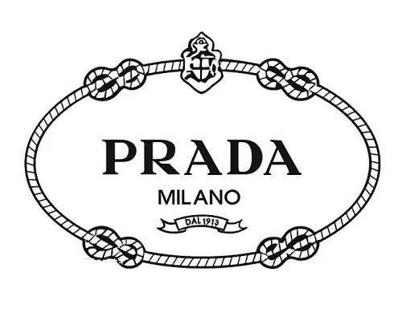
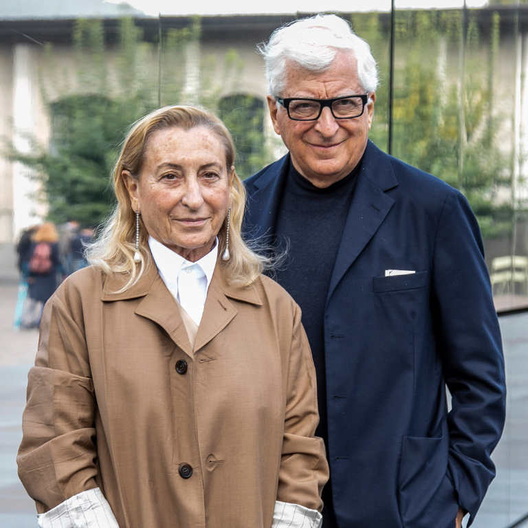

isadora e nicole

PRADA MILANO
 O INICIO
O INICIO
A concepção ou o Big Bang aconteceu em 1913, quando dois irmãos, Mario e Martino,
decidiram abrir a Fratelli Prada, uma loja especializada em artigos de couro e acessórios
para viagem, voltada para público nobre e localizada em um dos pontos mais importantes
e imponentes de Milão até hoje, a Galleria Vittorio Emmanuele II, símbolo máximo de luxo
e considerado um dos shoppings mais antigos do mundo. O local escolhido foi estratégia par
atrair o público alvo e a mira foi tão certeira que em 1919, se tornaram fornecedores oficiais
da Casa Real da Itália, título que sacramentou seu lugar de prest

PROCESSO DE INTERNACIONALIZAÇÃO
processo de intenacionalização em 1986,inagugura-se as primeiras lojas
em Madri e NovaYork .logo depepos vieram algumas espalhadas em Paris,Londres e tambem
em Tóquio.
>